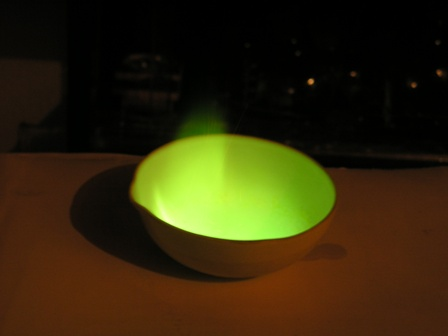
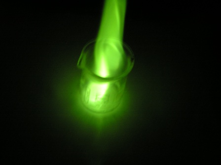

Non tutte le ciambelle riescono col buco, come abbiamo visto nel post n.1: ogni tanto bisogna accontentarsi di quel che passa il convento e mandar giù anche quelle con un buco piccolino!
Trasponendo in laboratorio questa semplice metafora, voglio qui presentare la sintesi del trimetilborato, che anche se ha avuto una resa da schifo per dirla chiara, è stata tuttavia interessante e sufficiente a evidenziare questo estere dell'acido borico e magari farci qualche considerazione.
Materiale occorrente:
- acido borico
- metanolo
- vetreria opportuna
1- Preparazione dell'anidride borica
L'anidride borica B2O3 è facilmente preparabile a partire dall'acido borico H3BO3 per disidratazione a caldo, secondo i seguenti passaggi:
acido borico --> acido metaborico --> acido tetraborico --> anidride borica
H3BO3 --> HBO2 + H2O oltre i 100°
4 HBO2 --> H2B4O7 + H2O oltre i 160°
H2B4O7 --> 2 B2O3 + H2O al calor rosso
Ho agito come segue: porre su una lamina ben pulita di acciaio inox leggermente concava una trentina di grammi di acido borico e scaldare a fiamma diretta con il bunsen; l'acido borico comincia a schiumeggiare, poi fonde e poi si disidrata completamente secondo i passaggi sopra detti.
Bisogna insistere molto ed a fiamma forte, al calor rosso, non di meno, fino al cessare del tutto dell'emissione di bollicine di vapore dalla massa fusa.
Quando il liquido trasparente di B2O3 è limpido e tranquillo, versarlo ancora rovente su un piano freddo di marmo, dove immediatamente solidifica.
La B2O3 è una massa vetrosa molto dura (sembrano proprio scheggette di vetro), fastidiosissima da polverizzare ma bisogna farlo con l'aiuto di un buon mortaio se si vuol procedere nella sintesi.
2- Preparazione del trimetilborato
In un pallone da 100 ml munito di condensatore a riflusso porre 40 ml di metanolo e 17,5 g di anidride borica ben polverizzata in piccole porzioni.
Dopo l'aggiunta far bollire a riflusso per un'ora. Sostituire l'allhin con un condensatore da distillazione e distillare l'azeotropo metanolo-trimetlborato a una temperatura di 65-70°. Nella raccolta si dovrebbero separare due fasi, la parte superiore consistente in trimetilborato praticamente puro, mentre la più bassa costituita da acqua, metanolo e una piccola quantità di esteri diversi.
Il problema che ho incontrato sta in questa fase, anzi proprio "nell'assenza di fasi", poichè ho ottenuto una unica soluzione di trimetilborato in metanolo e non so esattamente in quali proporzioni.
Ho notato tuttavia una consistente quantità di B2O3 indecomposta come residuo, indice che la resa è stata molto scarsa, come dicevo all'inizio.
Caratteristiche del borato di metile: liquido incolore infiammabile, p.e.68°.
La reazione di sintesi è semplice, la metto direttamente così:
B2O3 + 6 CH3-OH --> 2 B(O-CH3)3 + 3 H2O
Le foto mostrano lo splendido e caratteristico colore verde che il borato di metile impartisce alla fiamma, un colore che evoca inquietanti eteree presenze... (si fa per dire!).


Resta il dubbio sulla mancata separazione delle fasi, come indicava la mia fonte procedurale, e sulla scarsa resa complessiva.
Mancava un catalizzatore? Magari semplice H2SO4?
Resterà un mistero, a meno che qualcuno non abbia qualche buon suggerimento... o un diverso metodo di sintesi.
2 commenti